Filter settings, ocular correction by independent component analysis and the artifact rejection criterion follow the Lund protocol as described in Söderström, Horne and Roll (2016) and Hed, Schremm, Horne and Roll (2019).
| Participant | Group | Components removed | n | Variance removed | ICLabel eye probability |
|---|---|---|---|---|---|
| 0101 | L1 | IC1,IC3 | 2 | 62.9% | IC1 (90%), IC3 (96%) |
| 0104 | L1 | IC1,IC6 | 2 | 44.3% | IC1 (94%), IC6 (96%) |
| 0105 | L1 | IC2,IC3,IC4 | 3 | 24.7% | IC2 (98%), IC3 (87%), IC4 (88%) |
| 0106 | L1 | IC1,IC2,IC3,IC5,IC7 | 5 | 86.4% | IC1 (96%), IC2 (97%), IC3 (93%), IC5 (87%), IC7 (89%) |
| 0107 | L1 | IC1 | 1 | 40.8% | IC1 (96%) |
| 0108 | L1 | IC3 | 1 | 22.6% | IC3 (96%) |
| 0110 | L1 | IC1 | 1 | 5.3% | IC1 (91%) |
| 0111 | L1 | IC1 | 1 | 52.3% | IC1 (95%) |
| 0202 | L2 | IC1,IC2,IC3,IC4,IC7 | 5 | 95.0% | IC1 (86%), IC2 (93%), IC3 (96%), IC4 (83%), IC7 (89%) |
| 0203 | L2 | IC11 | 1 | 0.5% | IC11 (94%) |
| 0204 | L2 | IC1,IC2 | 2 | 83.5% | IC1 (99%), IC2 (99%) |
| 0205 | L2 | IC1 | 1 | 57.8% | IC1 (96%) |
| 0206 | L2 | IC1,IC3,IC4,IC5 | 4 | 58.4% | IC1 (85%), IC3 (99%), IC4 (83%), IC5 (87%) |
| 0207 | L2 | IC3,IC5 | 2 | 17.7% | IC3 (97%), IC5 (92%) |
| 0208 | L2 | IC3,IC7,IC9 | 3 | 18.2% | IC3 (95%), IC7 (98%), IC9 (83%) |
| 0209 | L2 | IC1,IC2 | 2 | 31.2% | IC1 (98%), IC2 (99%) |
The ERP analysis covers the first 20 participants recorded. Participants for whom fewer than 50% of trials were artifact-free at any analysed time-lock were excluded, leaving 16: 8 L1 Spanish speakers and 8 L2 Spanish learners.
| Participant | Group | Reason |
|---|---|---|
| 0102 | L1 | All epochs rejected as artifactual; reconstructed FCz had a median peak-to-peak amplitude of 263 µV |
| 0103 | L1 | All epochs rejected as artifactual |
| 0201 | L2 | All epochs rejected as artifactual |
| 0109 | L1 | 81.7% of trials rejected at training verb F0 (98 of 120) |
For the participants entering the analysis, the highest rejection rate at any analysed time-lock was 26.4% (participant 0101); rejection rates for all others were below 8%.
Epochs were time-locked to noun F0, verb F0 and suffix onset. Mean amplitude was measured over three regions of interest: centrofrontal (F3, FCz, FC1, Cz), left anterior (F7, F3, FC5) and centroparietal (Cz, CP1, CP2, Pz). FCz substitutes for Fz, which is absent from the montage.
| Component | Window | Region |
|---|---|---|
| PrAN | 136 to 280 ms | Centrofrontal |
| LAN | 225 to 300 ms | Left anterior |
| N400 | 300 to 500 ms | Centroparietal |
| P600 | 400 to 700 ms | Left anterior and centroparietal |
Amplitudes were averaged within participant and condition before being averaged across participants. Values are reported in µV with the standard error across participants in parentheses. The analyses below are descriptive.
| Group | Session | Paroxytone | Oxytone |
|---|---|---|---|
| L1 | Pre | -0.15 (0.25) | -0.59 (0.33) |
| L1 | Post | -0.62 (0.33) | -0.20 (0.22) |
| L2 | Pre | -0.55 (0.31) | -0.90 (0.36) |
| L2 | Post | -0.21 (0.39) | -1.52 (0.48) |
| Group | Session | Difference |
|---|---|---|
| L1 | Pre | -0.44 |
| L1 | Post | 0.42 |
| L2 | Pre | -0.35 |
| L2 | Post | -1.32 |
In L2, oxytone verbs elicited a larger negativity than paroxytone verbs at post-test. The difference was smaller at pre-test. In L1, oxytone verbs were more negative at pre-test, and paroxytone verbs were more negative at post-test.
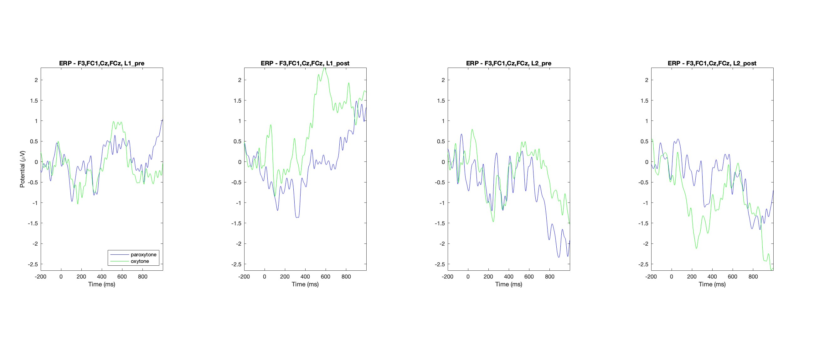
Figure 1. Verb stress PrAN at verb F0, centrofrontal ROI, by group and session.
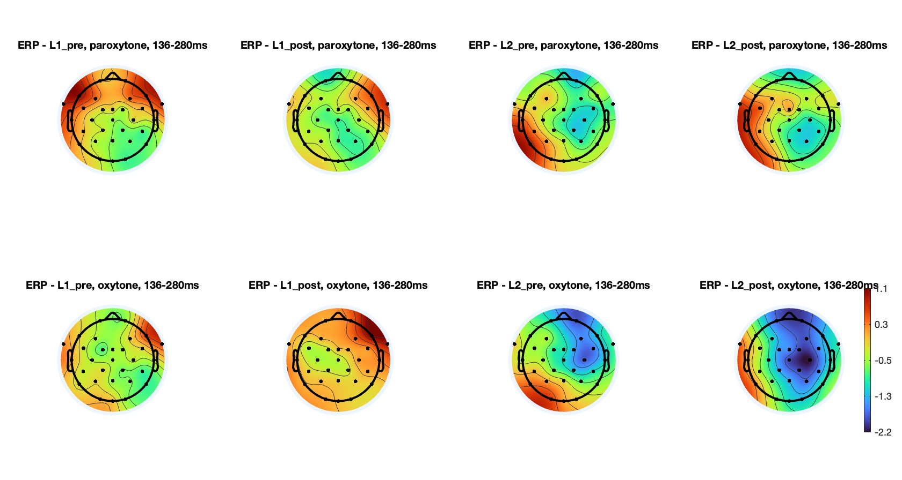
Figure 2. Scalp distribution, 136 to 280 ms, by stress, group and session.
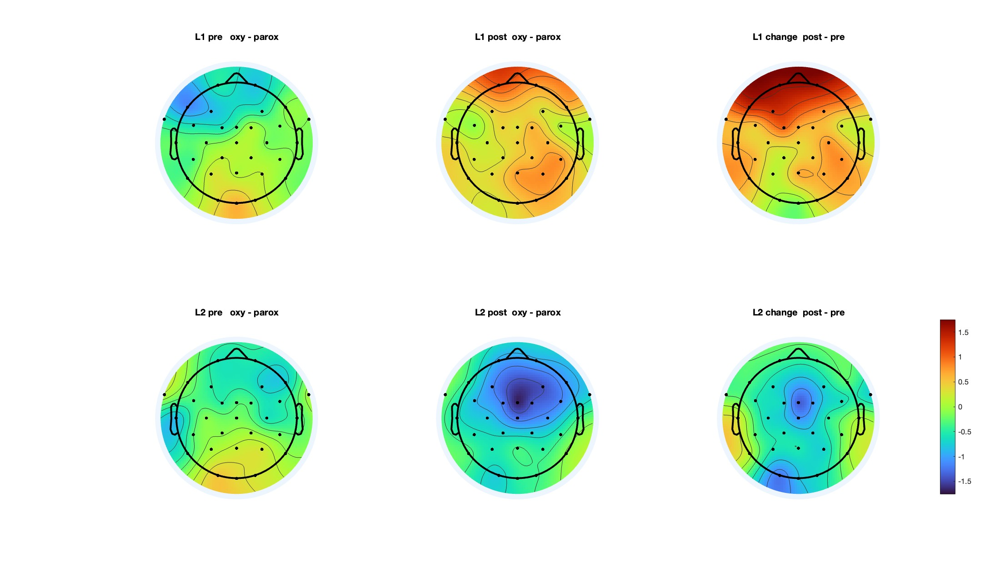
Figure 3. Oxytone minus paroxytone at pre-test and post-test, and the post-test minus pre-test change, by group.
| Group | Session | Match | Mismatch |
|---|---|---|---|
| L1 | Pre | -0.01 (0.25) | 0.50 (0.38) |
| L1 | Post | -0.03 (0.27) | -0.40 (0.39) |
| L2 | Pre | -0.03 (0.30) | -0.63 (0.25) |
| L2 | Post | -0.44 (0.43) | -0.17 (0.43) |
| Group | Session | Match | Mismatch |
|---|---|---|---|
| L1 | Pre | -0.05 (0.43) | -0.11 (0.53) |
| L1 | Post | -0.01 (0.47) | 0.19 (0.71) |
| L2 | Pre | 0.30 (0.28) | 0.36 (0.89) |
| L2 | Post | -0.43 (0.68) | -0.30 (0.77) |
| Group | Session | Match | Mismatch |
|---|---|---|---|
| L1 | Pre | 0.74 (0.68) | 0.85 (0.91) |
| L1 | Post | 0.85 (0.48) | 0.60 (0.45) |
| L2 | Pre | -0.42 (0.41) | -0.40 (0.41) |
| L2 | Post | -0.10 (0.39) | -0.07 (0.64) |
Invalidly cued verbs did not differ consistently from validly cued verbs in any window or region.
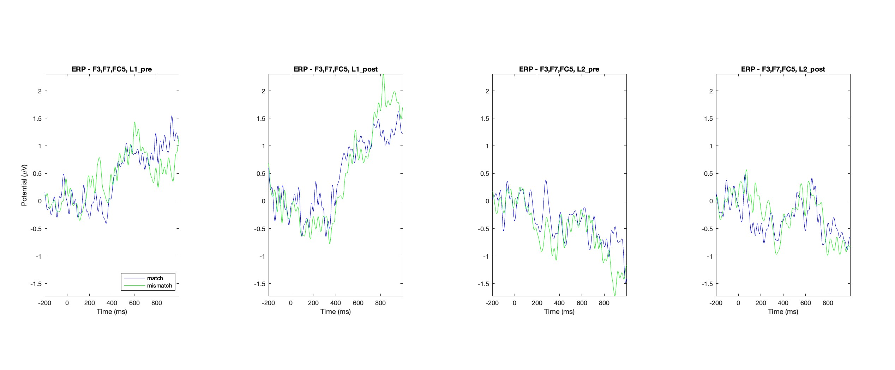
Figure 4. Noun violation at verb F0, left anterior ROI.
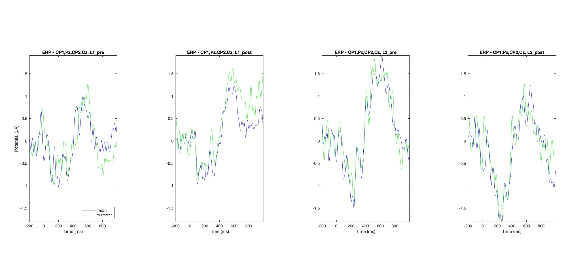
Figure 5. Noun violation at verb F0, centroparietal ROI.
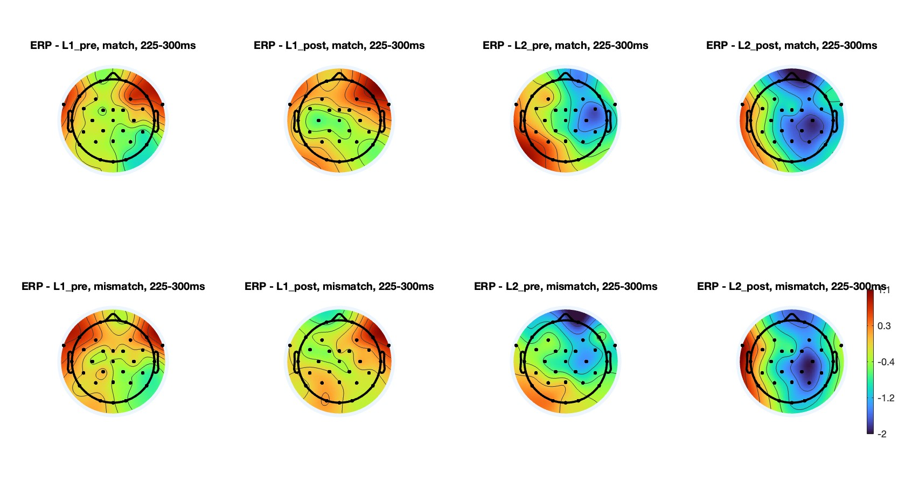
Figure 6. Scalp distribution, 225 to 300 ms.
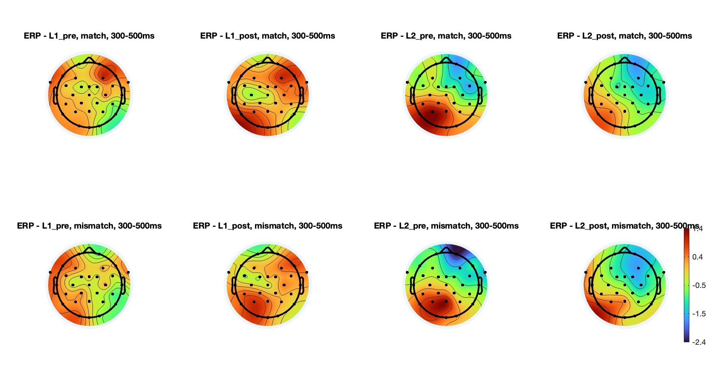
Figure 7. Scalp distribution, 300 to 500 ms.
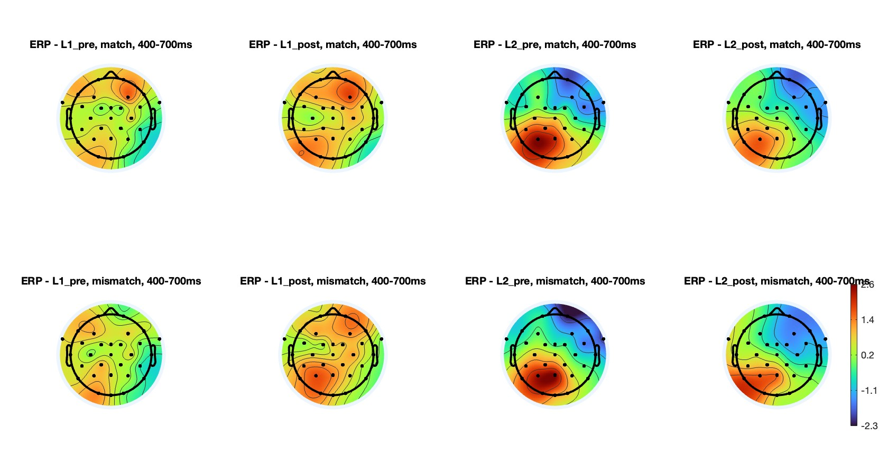
Figure 8. Scalp distribution, 400 to 700 ms.
| Group | Session | Match | Mismatch |
|---|---|---|---|
| L1 | Pre | 0.23 (0.44) | -0.47 (0.41) |
| L1 | Post | 0.62 (0.31) | -0.55 (0.35) |
| L2 | Pre | -0.53 (0.40) | -0.28 (0.53) |
| L2 | Post | -0.19 (0.24) | -0.79 (0.62) |
| Group | Session | Difference |
|---|---|---|
| L1 | Pre | -0.70 |
| L1 | Post | -1.17 |
| L2 | Pre | 0.25 |
| L2 | Post | -0.60 |
Invalidly cued suffixes elicited a larger negativity than validly cued suffixes in L1 at both sessions. In L2 the difference was absent at pre-test and present at post-test.
| Group | Session | Match | Mismatch |
|---|---|---|---|
| L1 | Pre | 0.85 (0.89) | 0.88 (0.91) |
| L1 | Post | 1.24 (0.80) | 1.59 (1.07) |
| L2 | Pre | 1.64 (0.77) | 1.49 (0.88) |
| L2 | Post | 1.05 (0.93) | 1.14 (0.97) |
| Group | Session | Match | Mismatch |
|---|---|---|---|
| L1 | Pre | 0.69 (0.86) | -0.06 (0.65) |
| L1 | Post | 1.36 (0.79) | 0.40 (0.77) |
| L2 | Pre | -0.57 (0.33) | -0.08 (0.43) |
| L2 | Post | -0.12 (0.38) | -0.47 (0.62) |
| Group | Session | Match | Mismatch |
|---|---|---|---|
| L1 | Pre | 0.40 (1.11) | 0.96 (1.05) |
| L1 | Post | 0.91 (0.75) | 1.82 (1.31) |
| L2 | Pre | 1.25 (0.88) | 1.65 (1.00) |
| L2 | Post | 0.88 (0.92) | 1.20 (1.02) |
In the 400 to 700 ms window, invalidly cued suffixes elicited a larger negativity than validly cued suffixes at left anterior electrodes and a larger positivity at centroparietal electrodes.
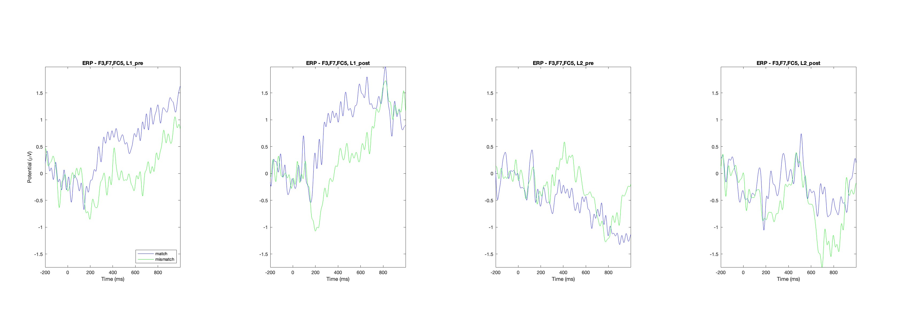
Figure 9. Verb violation at the suffix, left anterior ROI.
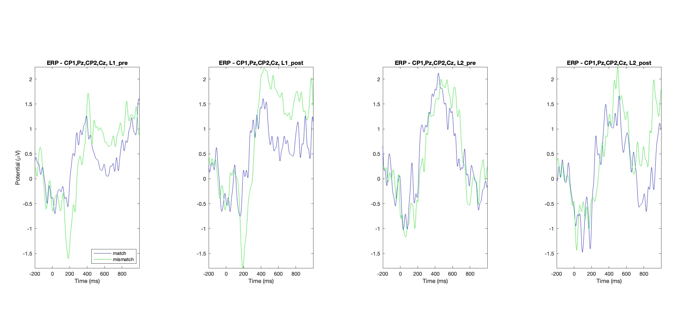
Figure 10. Verb violation at the suffix, centroparietal ROI.
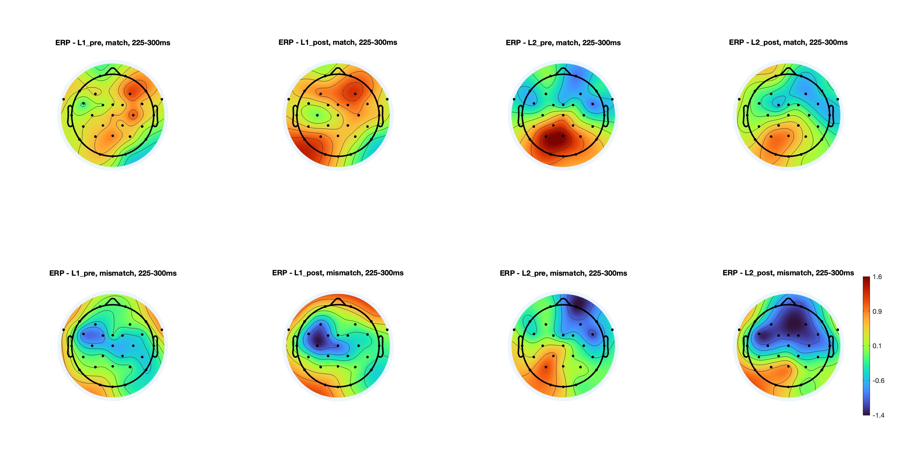
Figure 11. Scalp distribution, 225 to 300 ms.
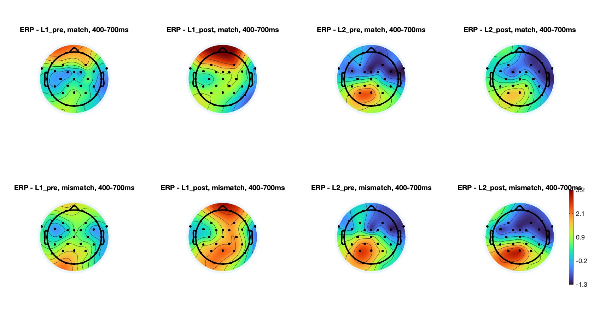
Figure 12. Scalp distribution, 500 to 700 ms.
| Component | Group | Session | a | b | c | d | e | f |
|---|---|---|---|---|---|---|---|---|
| N400, suffix | L1 | Pre | 0.53 | 1.40 | 1.75 | 0.58 | 0.01 | 1.17 |
| N400, suffix | L1 | Post | 0.46 | 2.20 | 2.91 | 0.74 | 0.28 | 2.01 |
| N400, suffix | L2 | Pre | 1.44 | 1.43 | 1.91 | 1.68 | 1.08 | 1.85 |
| N400, suffix | L2 | Post | 1.11 | 1.32 | 2.02 | 0.10 | 0.25 | 0.98 |
| P600, suffix, centroparietal | L1 | Pre | 0.34 | 0.64 | 1.57 | -0.13 | 0.35 | 0.45 |
| P600, suffix, centroparietal | L1 | Post | 0.50 | 1.59 | 2.90 | 0.97 | 0.74 | 1.32 |
| P600, suffix, centroparietal | L2 | Pre | 0.75 | 1.32 | 2.33 | 0.97 | 0.97 | 1.75 |
| P600, suffix, centroparietal | L2 | Post | 0.80 | 0.93 | 2.46 | -0.29 | -0.06 | 0.95 |
Among invalidly cued conditions, condition c was more positive than condition e in every group and session.
## R version 4.4.2 (2024-10-31)
## Platform: aarch64-apple-darwin20
## Running under: macOS Sequoia 15.7.7
##
## Matrix products: default
## BLAS: /System/Library/Frameworks/Accelerate.framework/Versions/A/Frameworks/vecLib.framework/Versions/A/libBLAS.dylib
## LAPACK: /Library/Frameworks/R.framework/Versions/4.4-arm64/Resources/lib/libRlapack.dylib; LAPACK version 3.12.0
##
## locale:
## [1] en_US.UTF-8/en_US.UTF-8/en_US.UTF-8/C/en_US.UTF-8/en_US.UTF-8
##
## time zone: America/New_York
## tzcode source: internal
##
## attached base packages:
## [1] stats graphics grDevices utils datasets methods base
##
## other attached packages:
## [1] mgcv_1.9-4 nlme_3.1-167 knitr_1.51 patchwork_1.3.2 openxlsx_4.2.8.1 fs_1.6.7 emmeans_2.0.2
## [8] lubridate_1.9.4 forcats_1.0.0 stringr_1.6.0 dplyr_1.1.4 purrr_1.2.1 readr_2.1.6 tidyr_1.3.1
## [15] tibble_3.2.1 ggplot2_4.0.1 tidyverse_2.0.0 lmerTest_3.2-0 lme4_1.1-38 Matrix_1.7-2
##
## loaded via a namespace (and not attached):
## [1] tidyselect_1.2.1 farver_2.1.2 S7_0.2.1 fastmap_1.2.0 digest_0.6.37
## [6] estimability_1.5.1 timechange_0.3.0 lifecycle_1.0.4 magrittr_2.0.3 compiler_4.4.2
## [11] rlang_1.1.6 sass_0.4.10 tools_4.4.2 utf8_1.2.5 yaml_2.3.10
## [16] labeling_0.4.3 bit_4.5.0.1 RColorBrewer_1.1-3 rsconnect_1.3.4 withr_3.0.2
## [21] numDeriv_2016.8-1.1 grid_4.4.2 xtable_1.8-4 scales_1.4.0 MASS_7.3-64
## [26] insight_1.4.4 cli_3.6.5 mvtnorm_1.3-3 rmarkdown_2.30 crayon_1.5.3
## [31] ragg_1.3.3 reformulas_0.4.0 generics_0.1.4 rstudioapi_0.17.1 tzdb_0.4.0
## [36] minqa_1.2.8 cachem_1.1.0 splines_4.4.2 vctrs_0.6.5 boot_1.3-31
## [41] jsonlite_2.0.0 hms_1.1.3 bit64_4.6.0-1 systemfonts_1.2.1 jquerylib_0.1.4
## [46] glue_1.8.0 nloptr_2.1.1 stringi_1.8.7 gtable_0.3.6 ggeffects_2.1.0
## [51] pillar_1.10.2 htmltools_0.5.8.1 R6_2.6.1 textshaping_1.0.0 Rdpack_2.6.2
## [56] vroom_1.6.5 evaluate_1.0.3 lattice_0.22-6 rbibutils_2.3 png_0.1-8
## [61] bslib_0.9.0 Rcpp_1.0.14 zip_2.3.2 coda_0.19-4.1 xfun_0.52
## [66] pkgconfig_2.0.3